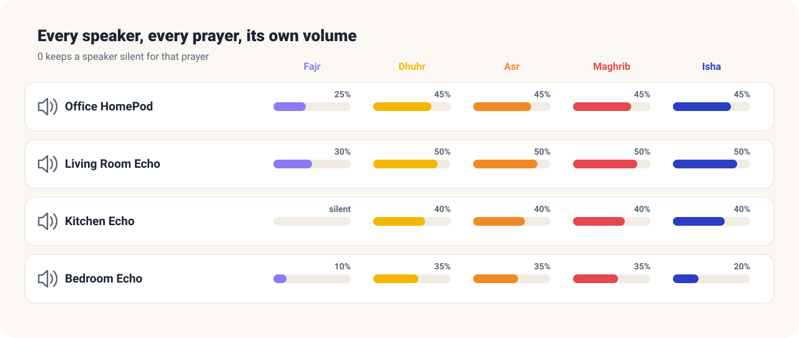
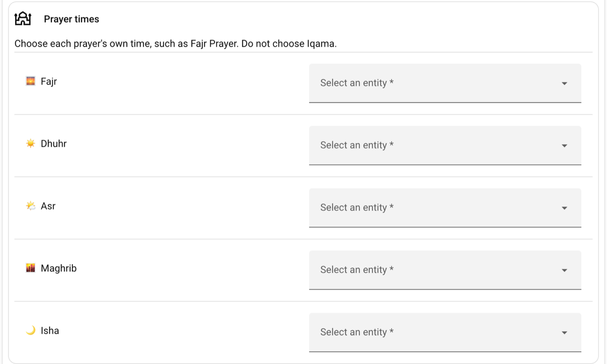
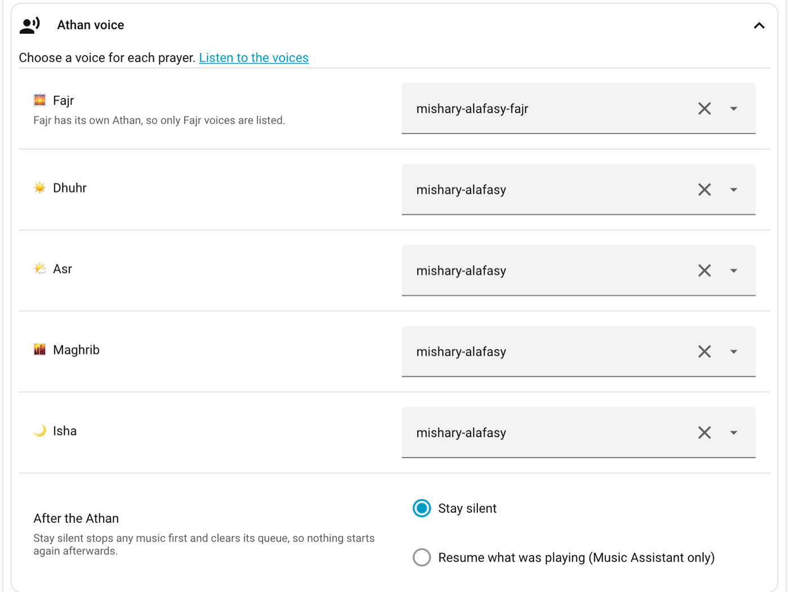
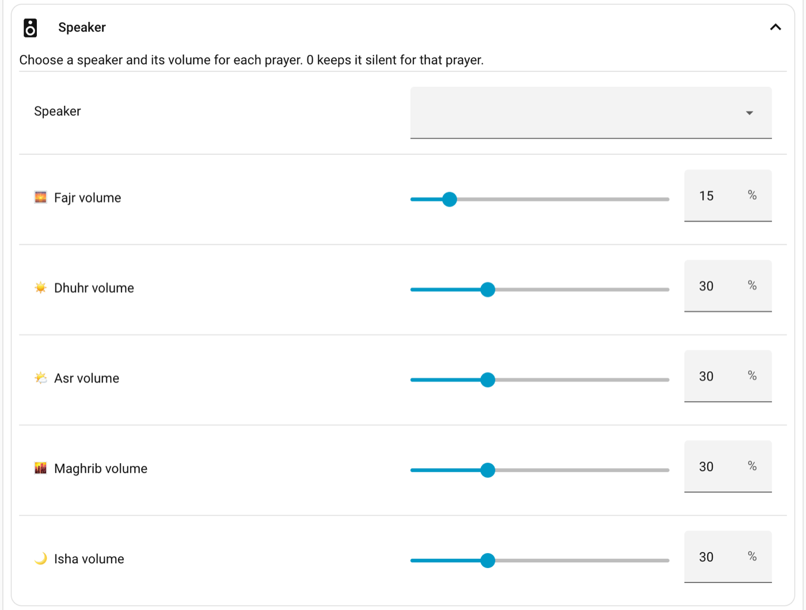
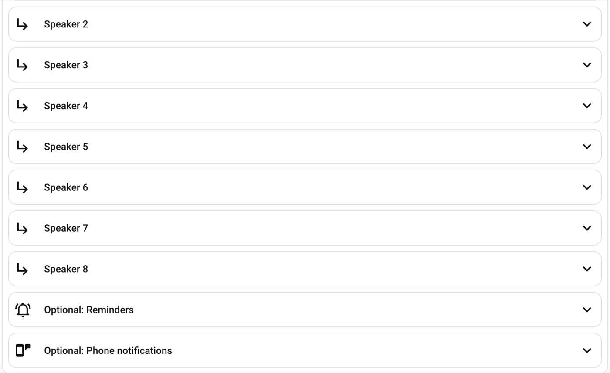

تنبيهات الأذان
The Athan on every speaker in your home, at the right volume for every prayer. Free, and set up in minutes.
HomePod · Amazon Echo · Google Cast · Sonos · Music Assistant
Features
One automation for the whole house: the right voice, the right speakers and the right volume, five times a day.
On time at Fajr, Dhuhr, Asr, Maghrib and Isha, from any prayer times integration such as MAWAQIT.
Over 40 reciters to choose from, and Fajr always plays a real Fajr Athan.
Quieter in the bedroom at Fajr, louder in the kitchen at Maghrib, or silent where you choose.
Music stops before the Athan and does not come back afterwards.
An optional spoken reminder on your speakers, minutes before the Athan.
In English and Arabic, at the Athan and with each reminder.

How it works
Import the blueprint, then fill in one short form in Home Assistant.
Pick each prayer's own time from your prayer times integration, such as Fajr Prayer. Not the Iqama.

Fajr lists Fajr Athans only. Decide whether music stays silent after the Athan or carries on.

One volume for each prayer. 0 keeps the speaker silent for that prayer. Add up to 8 speakers.

Add reminders and phones if you want them, save, then choose Run actions in the ⋮ menu to hear it.

Voices
Choose a voice by name in Home Assistant. The short name under each one is what the box shows after you pick it.
بالعربي
Free and open source. Import it, choose your speakers, and hear the Athan at the next prayer.